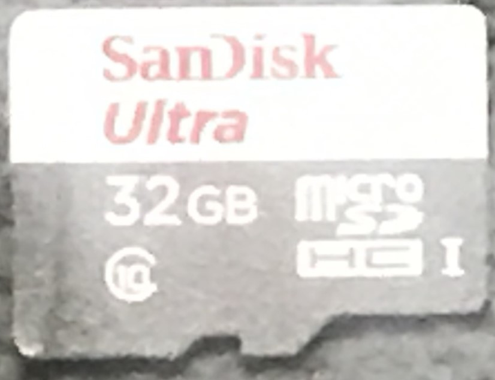

마이크로 SD 카드
Figure 1 는 2024년 11월 16일 현재 우리집 Rassberry Pi에 사용중인 마이크로 SD (Secure Digital) 카드이다. 초기의 FAT16파일시스템을 사용하여 용량이 2 GB로 제한되었으나 이 제품은 FAT32파일시스템을 사용한 SDHC (Secure Digial High Capacity) 제품이다. Class라 부르며 기록을 할 수 있는 속도를 우측이 비어있는 원안에 표시를 한다. 우리집 것은 10이 있으며 이는 기록속도가 초당 10 MB라는 의미이다.
요약하자면
FAT32 파일시스템
32 GB 저장용량
Class 10 (= 초당 10 MB) 기록속도

Raspberry Pi setup
설치파일 다운로드
공식사이트에서 라즈베리파이 설치 이미지파일을 다운로드 받는다 (https://www.raspberrypi.com/software/). 2024년 11월 16일 현재 원도우용 최신 설치이미지파일은 imager_1.8.5.exe이다.
SD카드에 OS설치
이미지설치파일을 실행하여
운영체제를 선택하고…
Customizing OS에서 아래의 사항들을 선택하고 진행한다.
-
- pi user에 대한 password 설정해야 하고
- password를 default `raspberry`로 진행한다면 이후 변경해야 함 -
SSID: ??_????????????
Password: ??????????
-
설치가 완료가 완료되면 사용 가능한 상태가 된다.
SSH 접속
- Android에서는 SSH 클라이언트를 설치하여 접속한다. 대표적인 SSH 클라이언트는 다음과 같다.
- Termius: Android에서도 사용 가능하며 플랫폼 간 동기화 지원.
- JuiceSSH: 인기 있는 Android SSH 클라이언트, 무료 및 유료 플랜 제공.
- ConnectBot: 오픈소스이며 가벼운 SSH 클라이언트.
- Raspberry Pi의 IP를 알기위해 Android 용 Network Discovery가 추천된다.
- Windows에서는 PuTTY를 사용한다.
VNC 접속
VNC enable을 선택하여 활성화한다. 해상도 설정
안드로이드용 AVNC를 설치하여 접속